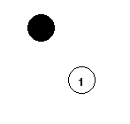
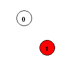
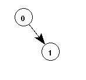

Directed Graph Example
The following example shows a SWIG generated extension for
the Tcl/Tk Netscape plugin. The interface is written in
Tcl/Tk, but the underlying functionality has been implemented
entirely in C. (Ok, the interface is a little lame, but this
example was only cooked up in an afternoon).
Instructions
- Left mouse button creates a node
- Middle mouse button creates a link. Works as follows :
- Click on starting node 
- Move mouse to end node 
- Click middle mouse button again 
- Right mouse button will show which nodes are connected or
the shortest path between two nodes (if selected).
- The "More edges" button adds more edges to the graph using a
transitive closure algorithm.